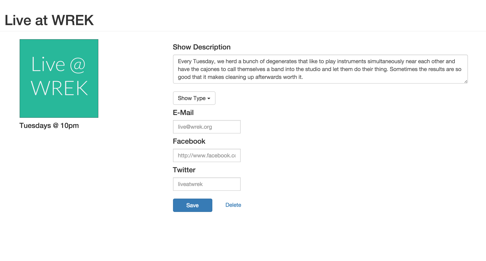
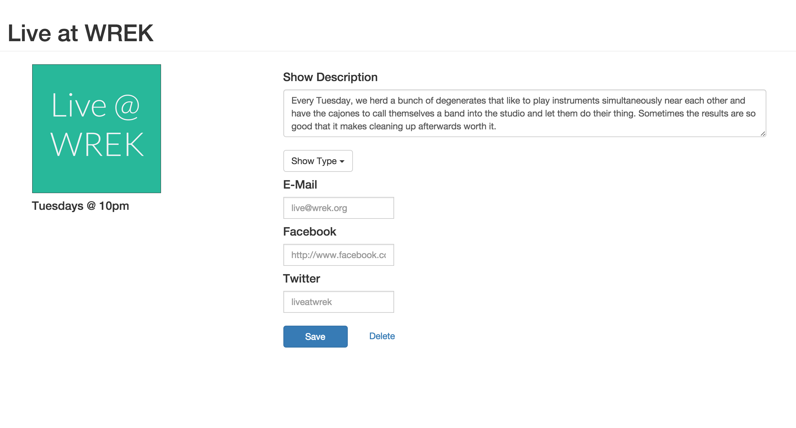
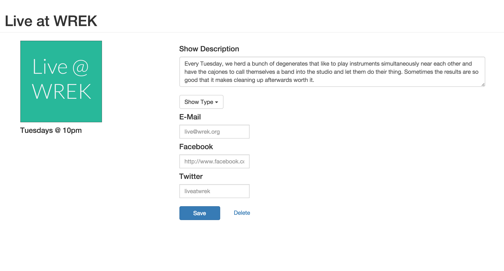

WREK Scheduler
The aim of this project was to redesign the original scheduling dashboard by limiting the number of clicks the user has to make. Instead of having to visit multiple different pages, a show can now be edited in one page.
It can be viewed here.
 

